Direct touch invitation
The opening screen uses a touch icon and a short invitation to begin a vision, set within a green-and-gold composition.
A simple invitation before a more detailed world.
Explore the story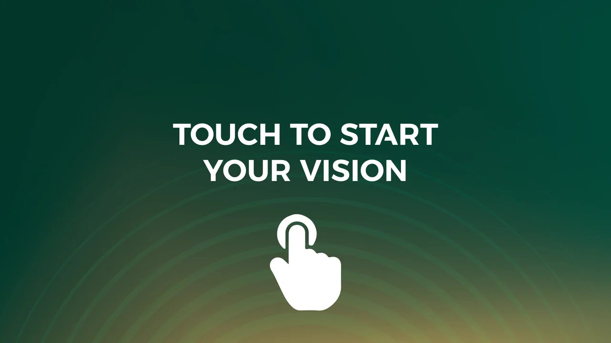
Provide a clear point of entry to a proposed city-building interface.
A touch symbol and short invitation lead the opening screen. Green-and-gold styling connects that first action to the more detailed city artboards.
The opening screen uses a touch icon and a short invitation to begin a vision, set within a green-and-gold composition.
Related artboards introduce a city-building interface with detailed city imagery and campaign-specific content.
This case focuses on the selected game's UI treatment while keeping the city illustration, simulation logic and other event concepts separate.
Explore the complete compositions and interface states. Select any image for a closer look.
18 / PROJECT IMAGES
Select a view to explore.
A direct touch prompt introduces the city-building interface. The identity graphic has been removed from this native presentation copy.
The mission introduces a city-building challenge balancing innovation, sustainability and citizen wellbeing.
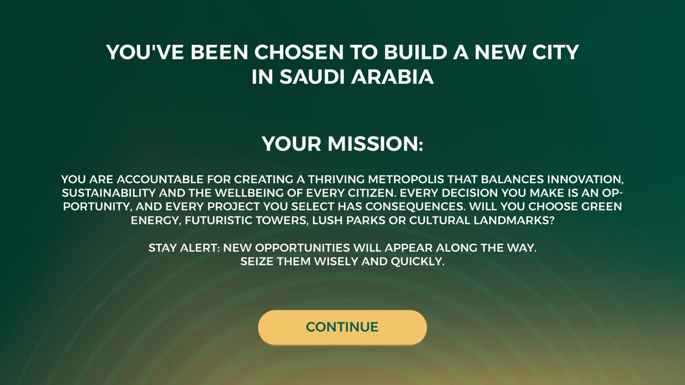
The instruction screen explains the six game metrics. Numbers and financial concepts are game content, not real forecasts.
The registration state asks for a player name and a city name; both fields remain empty.
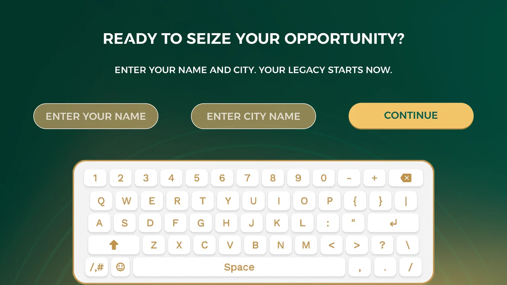
A starting point: saved game-interface artwork. The city illustration and asset icons are supplied components; displayed metrics are illustrative game values.
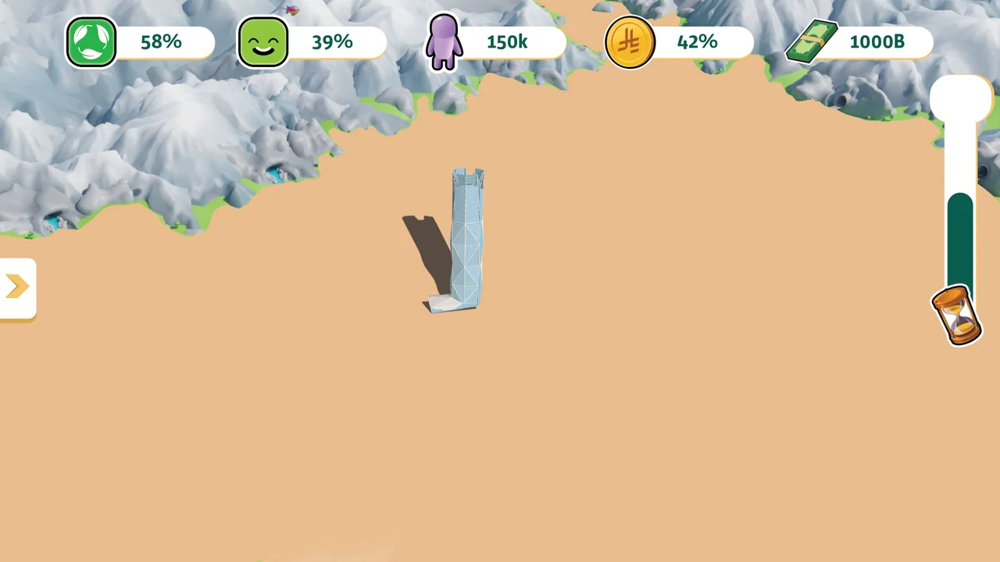
Explore the city: saved game-interface artwork. The city illustration and asset icons are supplied components; displayed metrics are illustrative game values.
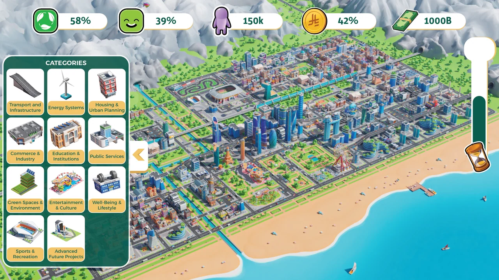
Transport and infrastructure: saved game-interface artwork. The city illustration and asset icons are supplied components; displayed metrics are illustrative game values.
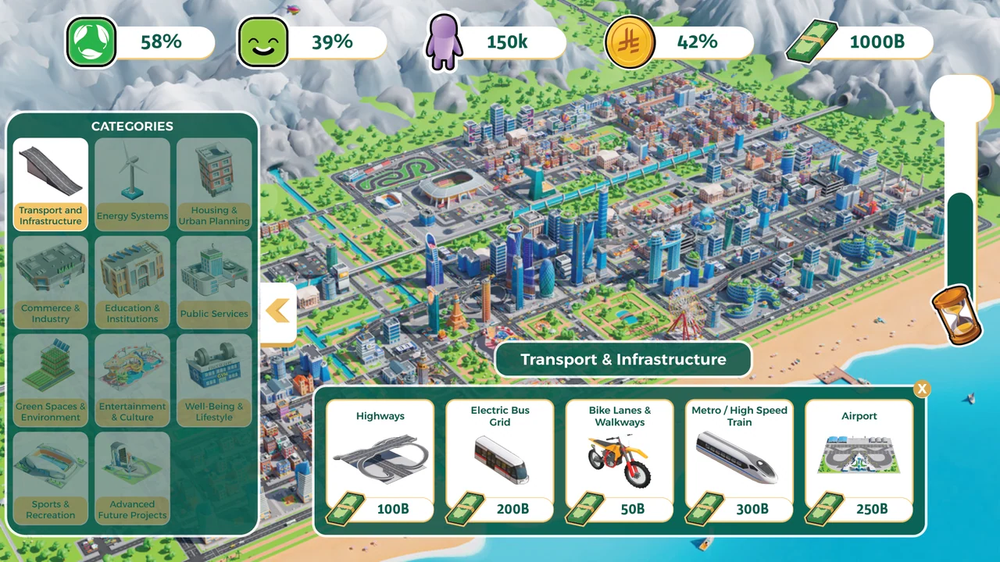
Energy systems: saved game-interface artwork. The city illustration and asset icons are supplied components; displayed metrics are illustrative game values.
Housing and urban planning: saved game-interface artwork. The city illustration and asset icons are supplied components; displayed metrics are illustrative game values.
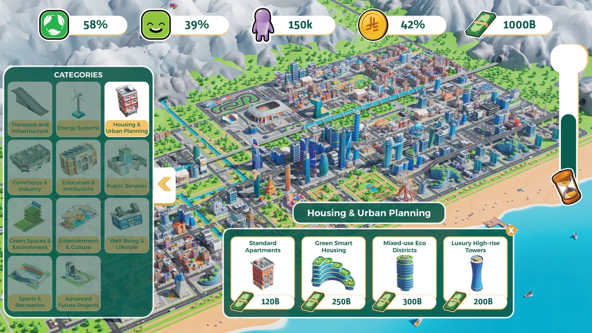
Commerce and industry: saved game-interface artwork. The city illustration and asset icons are supplied components; displayed metrics are illustrative game values.
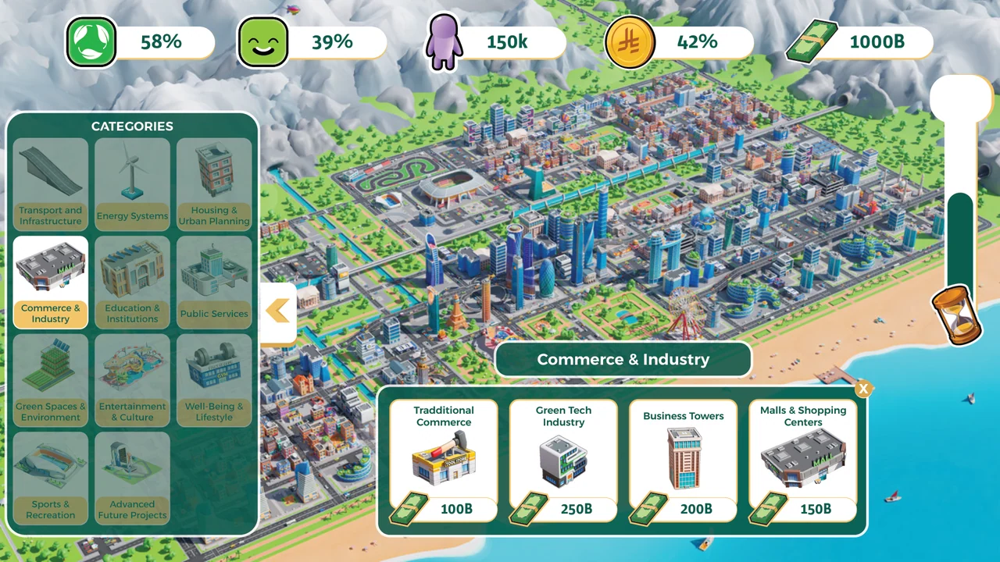
Education and institutions: saved game-interface artwork. The city illustration and asset icons are supplied components; displayed metrics are illustrative game values.
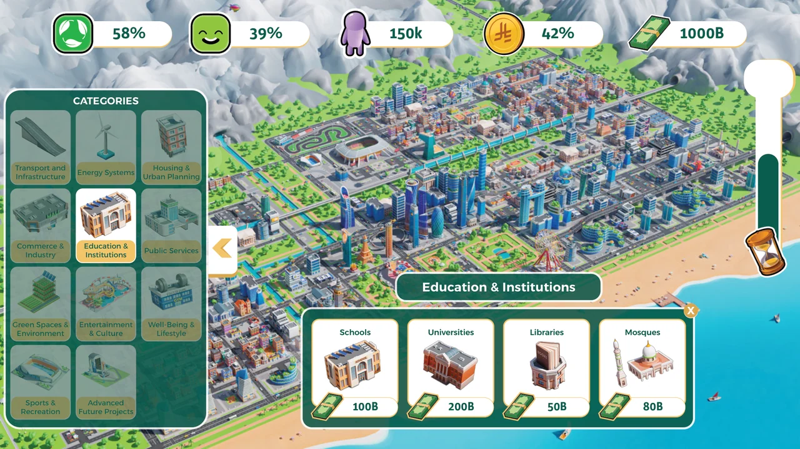
Public services: saved game-interface artwork. The city illustration and asset icons are supplied components; displayed metrics are illustrative game values.
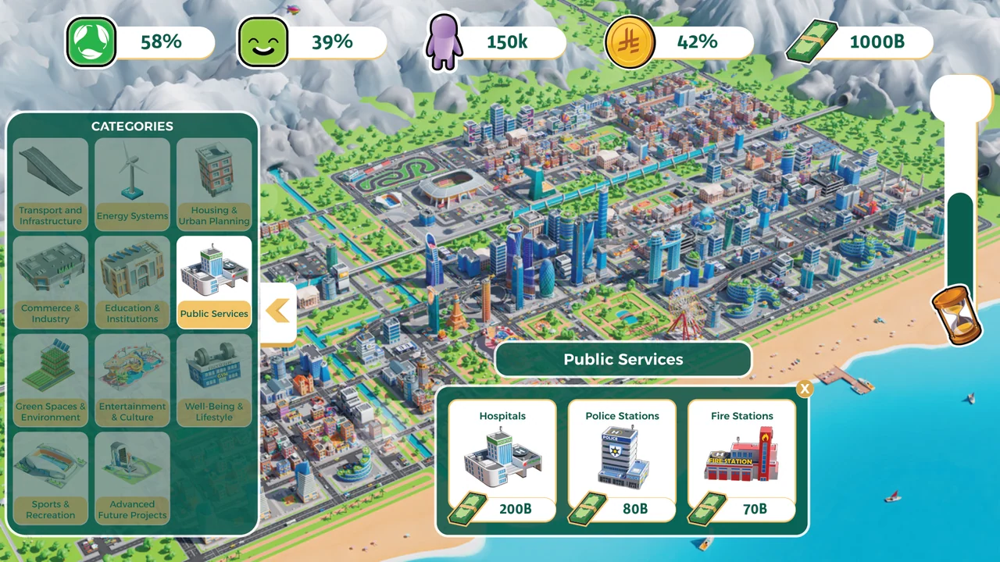
Green spaces and environment: saved game-interface artwork. The city illustration and asset icons are supplied components; displayed metrics are illustrative game values.
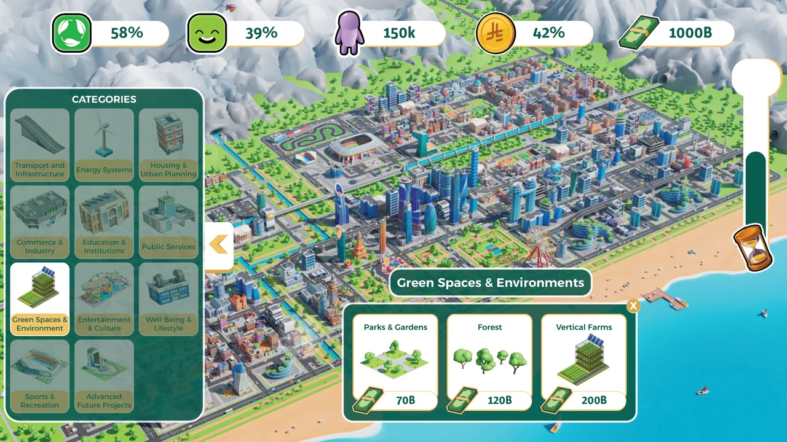
Entertainment and culture: saved game-interface artwork. The city illustration and asset icons are supplied components; displayed metrics are illustrative game values.
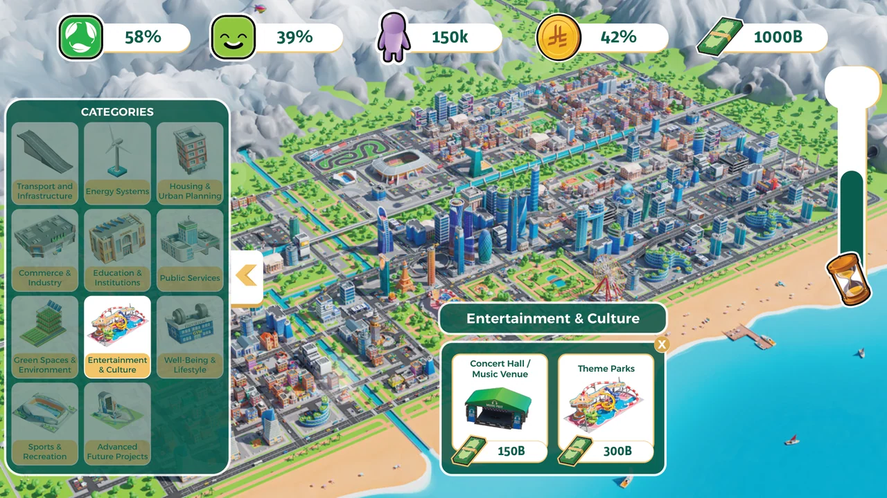
Wellbeing and lifestyle: saved game-interface artwork. The city illustration and asset icons are supplied components; displayed metrics are illustrative game values.
Sports and recreation: saved game-interface artwork. The city illustration and asset icons are supplied components; displayed metrics are illustrative game values.
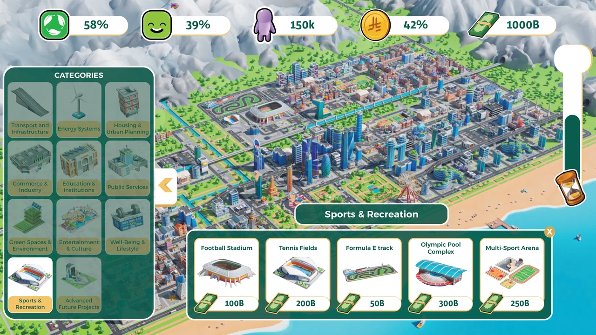
Advanced future projects: saved game-interface artwork. The city illustration and asset icons are supplied components; displayed metrics are illustrative game values.
Completion transfers attention from the control screen to the shared display.
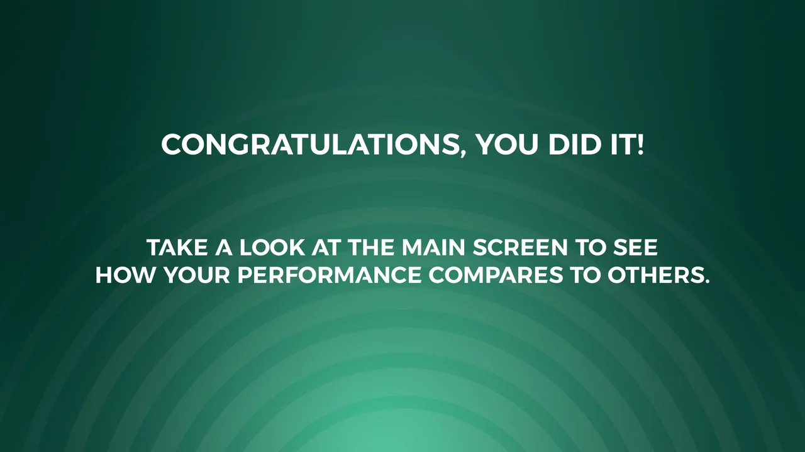
Structure, interaction and visual decisions that give the work its character.
RoleUI concept, screen composition and interaction presentation; confirm illustration and development responsibilities.
AssetsThe city imagery, identity assets and national insignia require source credits. No original city modeling or finished simulation is claimed.
StatusOne selected game concept within a broader event collection; runtime and source-asset attribution pending.